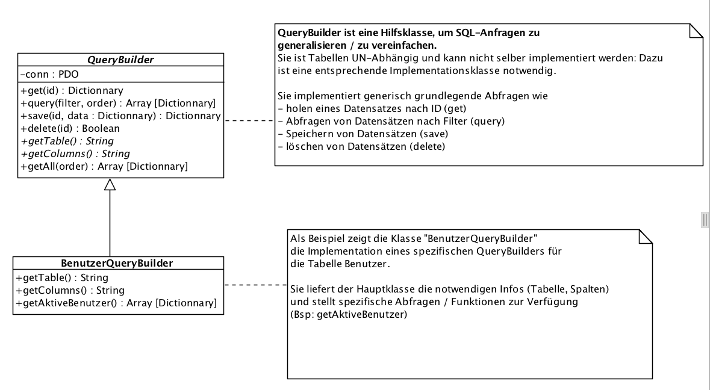

{% extends "../_base_template.html" %}
{% block title %}Lektion 6 - Model{% endblock %}

{% block sections %}
<section data-markdown>
<textarea data-template>
<i class="fas fa-graduation-cap"></i> M151 - DB in Web-App einbinden
=============================

Heutiges Ziel
--------------

* Umsetzen / Implementieren einer Model-Klasse:
  Sie können Datenbank-Zugriffe in einer Model-Klasse kapseln
* Sie können die Grundstruktur für Ihr MVC-Web-Framework in Code umsetzen

</textarea>
</section>

<section>
<section data-markdown>
<textarea data-template>
<i class="fas fa-graduation-cap"></i> Model, DB-Abstraktion
=============================

Wir haben letztes Mal verschiedene Funktionen rund um die Datenbank benutzt:

* Abfragen mittels SQL SELECT
* Änderungen mittels SQL INSERT/UPDATE
* Löschen mittels SQL DELETE

Da wir ein MVC-Framework entwickeln, sollen solche Standard-Funktionen natürlich auch ins Framework
einfliessen.
Versuchen Sie, Antworten auf folgende Fragen zu finden:

* Die DB-Connection ist sehr zentral.<br />
  <i class="far fa-hand-point-right"></i> Wie sorgen wir dafür, dass diese von allen Programmteilen
  / Klassen aus verfügbar ist? ** Wie lösen Sie dies mit OO-Werkzeugen?**
* Datenbank-Verbindungsparameter sind auf verschiedenen Systemen vermutlich unterschiedlich (Test, Produktion):<br />
  <i class="far fa-hand-point-right"></i> **Wo / wie definieren Sie die Datenbank-Verbindungsparameter, sodass diese vom Programmcode unabhängig sind?**
* Wir werden vermutlich an vielen Stellen in unserem Programm immer wieder ähnliche Abfragen machen:
  * **c**reate: Daten erstellen (z.B. Benutzer)
  * **r**ead: Daten lesen (z.B. Benutzer)
  * **u**pdate: Daten speichern (z.B. Benutzer aktualisieren)
  * **d**elete: Daten löschen
  * <i class="far fa-hand-point-right"></i> gemeinhin unter **CRUD**-Operationen bekannt
  *  Damit diese Abfragen nicht im ganzen Programm erneut geschrieben werden müssen, soll auch dies vereinfacht werden. <br />
    <i class="far fa-hand-point-right"></i> **Wie könnte eine solche Lösung aussehen?** (Denken Sie an das „M“ von MVC)
* <i class="far fa-hand-point-right"></i> **Wo sehen Sie Sicherheitsprobleme bei Datenbank-Zugriffen?**

 <i class="far fa-hand-point-right"></i> Finden Sie in den nächsten Minuten gemeinsam
 eine Antwort auf die oben genannten Fragen:

 * Zentrale DB-Connection: wie lösen Sie das?
 * Datenbank-Verbindungsparameter: Wie legen Sie diese ab, wie organisieren Sie diese?
 * Welche Struktur (OO) definieren Sie, um gemeinsame DB-Abfragen zu "sammeln"?

</textarea>
</section>

<section data-markdown>
<textarea data-template>
<i class="fas fa-graduation-cap"></i> Model, DB-Abstraktion
=============================

**Zentrale DB-Connection: wie lösen Sie das?**

* z.B. mittels einer **Singleton-Klasse**, welche das PDO-Objekt einmalig instanziert und
  jeweils ausliefern kann
* oder über eine zentral erreichbare Funktion im Controller (z.B. im Parent-Controller),
  welche die DB-Verbindung einmal aufbaut und liefern kann

** Datenbank-Verbindungsparameter: Wie legen Sie diese ab, wie organisieren Sie diese?**

* in einem separaten Config-File, welches:
  * nicht Teil des Software-Repositories ist
  * ausserhalb des Webroot liegt (um Direktzugriff darauf zu vermeinden)
    Bsp:
```php
  <?php
  // separate config.php-Datei:
  $db = 'testdb';
  $user = 'testuser';
  $pw = 'testpw';
```
```php
  <?php
  // Einlesen der Konfiguration in PHP:
  include('config.php');
  // nun stehen die Variablen lokal zur Verfügung:
  $conn = new Connection($db, $user, $pw);
```


** Welche Struktur (OO) definieren Sie, um gemeinsame DB-Abfragen zu "sammeln"?**

<i class="far fa-hand-point-right"></i> Siehe nächste Folie: QueryBuilder-Struktur

</textarea>
</section>
</section>

<section data-markdown>
<textarea data-template>
<i class="fas fa-graduation-cap"></i> Model, DB-Abstraktion
=============================

SQL-Abstraktion: die QueryBuilder-Klasse

Um die für alle Entiäten / Modelle anfallenden SQLs zu abstrahieren, empfehle ich Ihnen
die Entwicklung einer Query-Builder-Infrastruktur. Dies könnte in etwa so aussehen:



Die QueryBuilder-Klasse ist die Basisklasse, welche alle notwendigen SQL-Queries
für spezifische Entitäten erstellen und ausführen kann. Diese Klassen sollen die
Model-spezifischen SQLs "bauen" und ausführen können.

<i class="far fa-hand-point-right"></i> Siehe Code-Beispiele auf Moodle.

</textarea>
</section>
{% endblock %}
